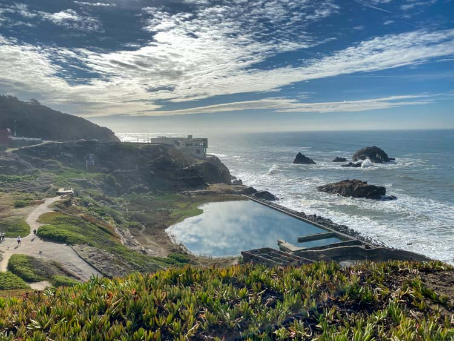

San Francisco
Lands End
Explore one of San Francisco's most dramatic coastal landscapes along the cliffs and trails of Lands End.
This guided experience combines sweeping views of the Pacific Ocean and Golden Gate with local ecology, history, and the stories that shape this remarkable coastline.
Ask About This Tour